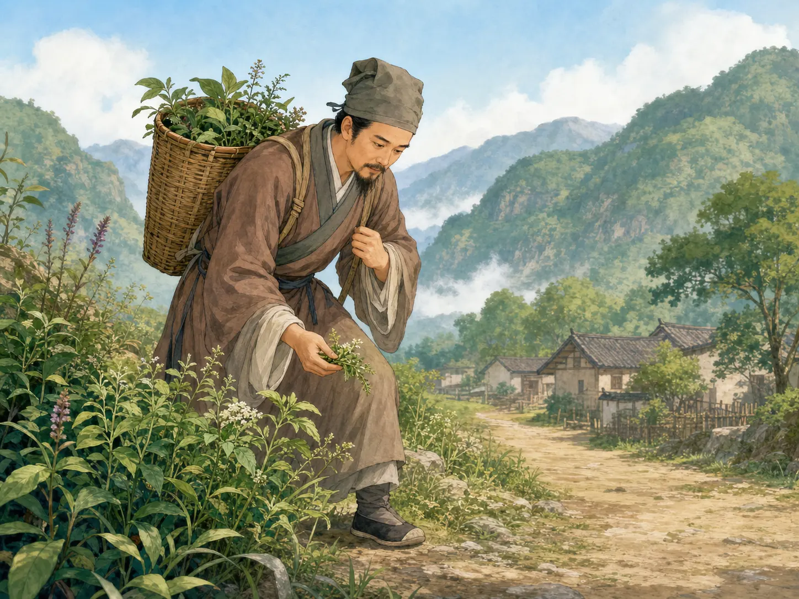

李时珍：写药书的大医生
Li Shizhen: The Great Doctor Who Wrote a Medicine Book
Page 1
他没有继续考功名
He Did Not Keep Chasing Exams
李时珍小时候，家里希望他好好读书，去考功名。
可是后来，他决定不继续走这条路。
他想学医，像父亲一样给人看病。
这是他一生里一个很重要的转弯。
When Li Shizhen was young, his family hoped he would study hard and follow the exam path.
But later, he chose not to keep walking that road.
He wanted to learn medicine and treat sick people, like his father.
That became one of the most important turns in his life.
Page 2
他发现旧药书里有很多错
He Found Too Many Mistakes
Li Shizhen compared old medicine books with real materials. He found that some parts of the books were simply not right.
李时珍看病很多年以后，发现旧的药书里有不少问题。
有些草药写得不清楚，有些名字会把不同的东西混在一起。
这些错误不只是小问题，有时候会害人。
于是他决定重新认真整理这些药材知识。
After many years of treating patients, Li Shizhen found that old medicine books had many problems.
Some herbs were described unclearly, and some names mixed different things together.
These were not small mistakes. Sometimes they could hurt people.
So he decided to organize this knowledge again much more carefully.
Page 3
背着竹筐到处走
He Traveled with a Basket on His Back

He did not only sit and read. He also traveled with a bamboo basket, seeing mountain plants and everyday medicine materials with his own eyes.
为了把药材弄清楚，李时珍去了很多很多地方。
他到山里、到乡下、到不同省份，一样一样去看、去问、去记。
他不只是看书，还亲自去找真正的植物和药材。
这是一件很辛苦、也很需要耐心的工作。
To understand medicinal plants better, Li Shizhen traveled to many different places.
He went into mountains, villages, and faraway provinces to look, ask questions, and take notes.
He did not only read books. He also searched for the real plants and materials with his own eyes.
It was hard work, and it asked for enormous patience.
Page 4
写出一本很大的书
He Wrote a Very Great Book
After many, many years, Bencao Gangmu was finally finished. Later, this great book influenced many people.
后来，李时珍花了很多年，写成了一本很大的书，叫《本草纲目》。
这本书收进了很多药材和很多说明，后来成了中国医药史上非常重要的一部书。
可惜的是，他去世的时候，还没有亲眼看到这本书真正印出来。
不过，这本书后来还是流传开了，也让很多人一直记得他。
Later, Li Shizhen spent many years writing a great book called Bencao Gangmu.
It collected many medicines and many careful explanations, and later became one of the most important books in the history of Chinese medicine.
Sadly, he did not live to see it fully printed with his own eyes.
But the book survived, spread far and wide, and helped people remember him for a very long time.
用一生整理知识的人
A Man Who Used His Life to Organize Knowledge
李时珍不是只会看病的大夫。
他还花了一生去检查、整理和写下很多关于药材的知识。
这就是为什么《本草纲目》和李时珍的名字一直都那么重要。
Li Shizhen was not only a doctor who treated patients.
He also used a lifetime to check, organize, and write down knowledge about medicines from nature.
That is why both Bencao Gangmu and Li Shizhen's name remain so important.